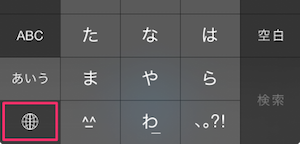

設定アイコンをタップし、設定画面を開きます。
「一般」をタップし、一般設定画面を開く。
「キーボード」をタップし、キーボード設定画面を開く。
「キーボード」をタップし、キーボード追加画面を開く。
「新しいキーボードを追加」をタップし、キーボード一覧を表示する。
「他社製キーボード」にある「FlickSKK」をタップし、FlickSKKを追加する。
追加された「FlickSKK」をタップし、設定画面を開く
「フルアクセスへ許可」をオンにする。オンにしなくても基本機能の利用は可能ですが、辞書の編集等が行なえません。
キーボード入力を行なうアプリを起動し、地球マークを長押し、またはタップで切り替えるとFlickSKKが起動します。
